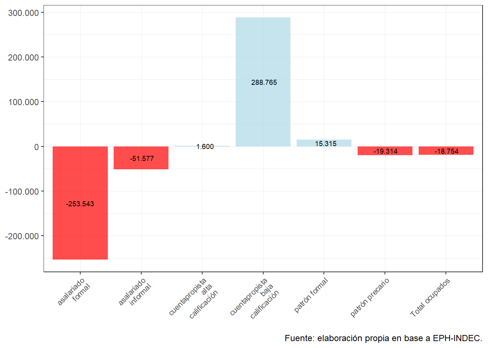
Resumen
La teoría del derrame postulaba que el crecimiento en los estratos superiores se trasladaría progresivamente hacia abajo. La evidencia sugiere lo contrario: lo que se traslada entre estratos no es riqueza sino deterioro. Cada nivel absorbe el impacto que el estrato superior ya no puede contener, y lo transmite hacia abajo con mayor intensidad. El resultado es una cascada regresiva: un proceso escalonado donde la precariedad se propaga de forma encadenada. Los ocupados de ingresos insuficientes no son una anomalía del sistema parece ser el destino actual de ese derrame invertido.
El mercado de trabajo argentino atraviesa una transformación estructural que, lejos de representar una recomposición virtuosa, configura una cascada regresiva: el deterioro no se detiene en los estratos más vulnerables, sino que se propaga de forma encadenada afectando progresivamente a capas más amplias de la población trabajadora.
Entre el cuarto trimestre de 2023 y el cuarto trimestre de 2025, el saldo neto de puestos de trabajo es casi nulo (-18.764), pero esa aparente estabilidad oculta una metamorfosis profunda: se destruyeron 253.543 puestos asalariados formales y se crearon 288.765 nuevos cuentapropistas de baja calificación. Nueve de cada diez puestos generados en este período son precarios, sin relación de dependencia, sin protección social y con ingresos que promedian el 45% de lo que percibe un trabajador registrado. No hay creación de empleo genuino; hay sustitución de empleo de calidad por ocupaciones de subsistencia.
Este quinto informe sobre el mercado de trabajo da cuenta de esa reconfiguración a través de cuatro ejes. Primero, la transformación en las inserciones laborales y el auge del cuentapropismo informal como fenómeno estructural y no coyuntural. Segundo, la crisis de ingresos que afecta a la mayoría de los ocupados: el 63% percibe hasta un millón de pesos mensuales y el 71% no logra cubrir el valor de la Canasta Básica Total. Tercero, el deterioro diferencial que sufren los jóvenes, quienes concentran el 53% del desempleo y registran la tasa de informalidad más alta de toda la serie histórica. Cuarto, la asimetría sectorial de un modelo que presenta como dinámicas a ramas que emplean apenas al 3% de los ocupados, mientras destruye empleo en los sectores que concentran al 40% de la fuerza de trabajo.
El resultado es una economía estancada con crisis de ingresos generalizada, donde los únicos que han logrado mantenerse son quienes conservaron su puesto asalariado formal previo —aunque con pérdida de poder adquisitivo—, y donde la población con problemas de empleo supera las 10 millones de personas.
Empeoramiento de las inserciones laborales
Pérdida de puestos formales y aumento de la precarización
Como hemos señalado en el informe anterior uno de los rasgos más sobresalientes de las reconfiguraciones que está sufriendo el mercado de trabajo en los últimos años es el crecimiento de puestos de trabajo ligados a la informalidad, fundamentalmente en la modalidad de cuentapropismo. Mientras que el trabajo asalariado formal, entre el 4to trimestre de 2023 y el 4to trimestre de 2025, tuvo una merma de 253.543 puestos laborales, el cuentapropismo de baja calificación aumentó en 288.765 trabajadores.
Los trabajadores expulsados del sector formal se reinsertan en condiciones de alta vulnerabilidad, con una pérdida sustancial de derechos laborales e ingresos significativamente menores, comprometiendo, a su vez, la sostenibilidad futura del sistema previsional.
El saldo entre trimestres es casi nulo (pérdida de 18.764 puestos) pero con una transferencia importante de trabajadores desde el sector asalariado al cuenta propia, en primer lugar, y desde inserciones formales a informales, en segundo lugar.
Al poner el foco en los puestos de trabajo creados entre el cuarto trimestre de 2023 (momento de asunción del actual gobierno) y el mismo trimestre de 2025, se observa un proceso de metamorfosis del empleo argentino (Figura 2). Del total de puestos generados en ese lapso, 7 de cada 10 corresponden a cuentapropistas precarios de baja calificación, mientras que los 3 restantes son monotributistas. En otras palabras, la totalidad de los puestos creados en estos dos años se concentra en modalidades de trabajo independiente, mayoritariamente por fuera de la protección social y de bajos ingresos.
Esta dinámica no representa una creación de empleo genuino, sino una recomposición regresiva del mercado laboral: los puestos asalariados formales (los únicos que garantizan estabilidad, derechos plenos y aportes jubilatorios) se destruyen, y en su lugar surgen ocupaciones precarias, sin relación de dependencia, con alta rotación y bajísima capacidad de sostener económicamente los hogares. Lejos de una reactivación virtuosa, lo que se consolida es un proceso de sustitución de empleo de calidad por puestos de trabajo precarios que operan como refugio para lograr subsistencia.
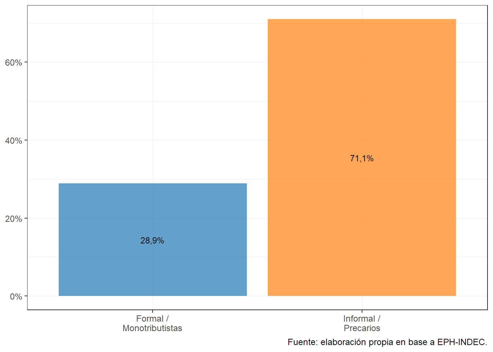
El análisis diacrónico de la estructura ocupacional argentina (Figura 3) revela un proceso de “desformalización” progresiva y sostenida. La participación de los asalariados formales (la categoría que concentra los puestos de trabajo más protegidos y mejor remunerados) ha experimentado una contracción significativa, descendiendo del 50% en 2016 a un mínimo histórico del 46% en 2025. Esta caída de 4 puntos porcentuales en nueve años consolida un cambio estructural en el mercado laboral, caracterizado por el avance relativo de modalidades más vulnerables, como el trabajo asalariado informal, pero fundamentalmente del cuentapropismo de baja calificación (que escaló del 16% al 20% en el mismo lapso).
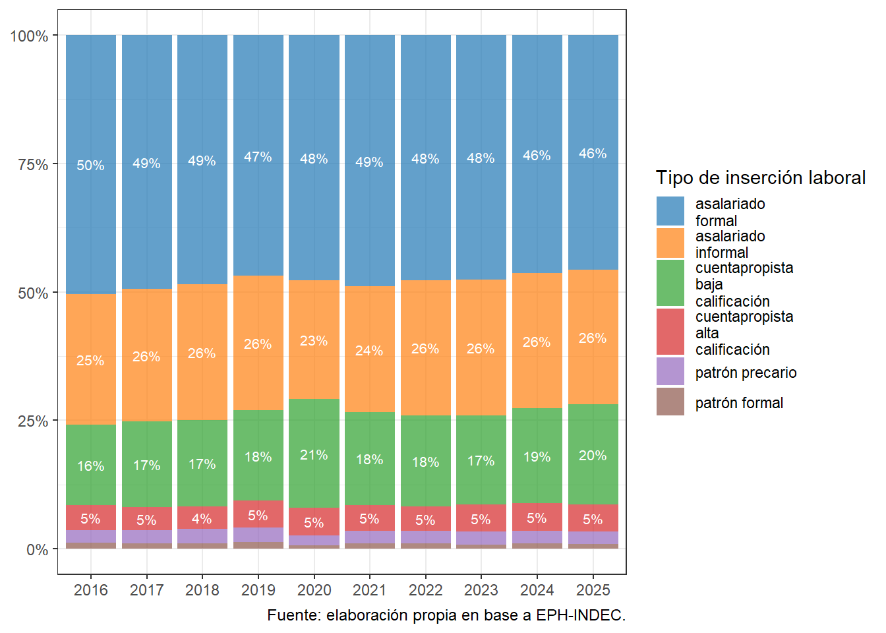
Cuentapropistas de baja calificación: el perfil de la ocupación que más creció
Si hay un tipo de inserción laboral que sintetiza la recomposición regresiva del mercado de trabajo argentino durante el actual período gubernamental, ese es el cuentapropismo de baja calificación. Según la EPH del cuarto trimestre de 2025, este segmento ya agrupa a 2,6 millones de trabajadores, consolidándose como la categoría ocupacional de mayor crecimiento desde el cambio de gobierno en 2023.
Se trata de una masa laboral con un perfil socioeconómico estructuralmente vulnerable. El 61% son varones, la mitad (51%) son jefes y jefas de hogar, y el 46% reside en el Conurbano Bonaerense, el epicentro de la destrucción del empleo formal. En términos educativos, el 47% no supera el secundario incompleto, lo que restringe severamente sus posibilidades de reinserción en empleos de calidad. La precariedad no se limita a su condición de cuentapropistas: el 73% se desempeña en puestos informales, y el 55% se concentra en dos ramas de baja productividad (comercio y construcción), mientras que sus ocupaciones más frecuentes son la comercialización directa (30%), los oficios de la construcción (19%) y la producción industrial informal (13%).
La sobrecarga laboral y la insuficiencia de ingresos operan como dos caras de la misma moneda en este perfil ocupacional. El 44% de los cuentapropistas de baja calificación está sobreocupado (trabaja más de 45 horas semanales) y el 33% subocupado, una paradoja que evidencia que trabajar más horas no garantiza salir de la precariedad. En promedio, sus ingresos laborales alcanzan los 720 mil pesos mensuales, un 45% por debajo de lo que percibe un asalariado formal. El 86% no logra superar el valor de la Canasta Básica Total (Línea de Pobreza) y el 42% el valor de la Canasta Alimentaria (Línea de Indigencia) y el 82% gana 1 millón de pesos o menos por mes.
ImportanteNo son Uber ni Rappi
Una aclaración resulta pertinente en el contexto actual: este universo de 2,6 millones de trabajadores no se reduce a quienes se desempeñan en plataformas como Uber, Pedidos Ya o Rappi. De hecho, quienes realizan tareas de traslado de pasajeros o reparto de mercaderías mediante aplicaciones suelen estar alcanzados por la obligación de inscribirse en el monotributo, lo que los ubica, al menos transitoriamente, dentro de la formalidad laboral. Se trata, sin duda, de puestos precarios, de bajos ingresos y que con frecuencia operan como refugio mientras se está desempleado o se busca otra ocupación, pero su inscripción en el monotributo implica un reconocimiento y una base (insuficiente) de aportes. Ahora bien, esa no es la situación de la mayoría de los cuentapropistas de baja calificación. El 73% de ellos se desempeña por fuera de todo registro, es decir en la informalidad total: son trabajadores por cuenta propia sin derechos laborales, sin acceso a obra social ni a jubilación futura, sin días pagos por enfermedad y cuya reproducción cotidiana depende de ingresos que ni siquiera alcanzan para cubrir el valor de la Canasta Básica Alimentaria (línea de Indigencia).
Lejos de tratarse de trabajadores de aplicación, el segmento de los cuentapropistas de baja calificación representa el rostro más duro de la precarización estructural, con ocupaciones de subsistencia en el comercio callejero, la construcción o la producción industrial informal, donde la única regla es la supervivencia diaria.
Jóvenes: desocupación y aceleración de la informalidad
El diagnóstico actual del mercado laboral argentino muestra una situación crítica para los jóvenes, quienes no solo enfrentan las mayores dificultades para insertarse en el empleo por ser nuevos ingresantes, sino que también son el grupo etario que concentra el grueso de la desocupación. Según los datos del cuarto trimestre de 2025, las personas menores de 30 años representan el 53% del total de desocupados.
A esto se suma que, dentro de la población juvenil ocupada, las condiciones de trabajo se han deteriorado hasta alcanzar el peor registro de toda la serie histórica. Durante el segundo trimestre de 2025, la tasa de informalidad entre jóvenes de 18 a 30 años escaló al 60%, el valor más alto jamás registrado, y aunque hacia el cierre del año descendió levemente al 58%, ese nivel sigue siendo estructuralmente superior al observado en años previos (siete puntos por encima del registro de 2016) (Figura 4). En la actualidad, casi 2 de cada 3 jóvenes ocupados (58%) trabajan en condiciones de informalidad, lo que implica una pérdida masiva de derechos laborales, acceso restringido a la salud y nula contribución al sistema previsional.
Esta problemática estructural se agrava con el aumento de la desocupación juvenil reportado por el INDEC para el cuarto trimestre de 2025. La tasa de desocupación entre los varones de 14 a 29 años se disparó al 16,2% (frente al 11,7% del trimestre anterior), mientras que entre las mujeres del mismo rango etario alcanzó el 16,8% (contra el 12,7% del tercer trimestre).
En síntesis, el mercado laboral no solo está empujando a los jóvenes a ocupaciones de peor calidad que en cualquier otro momento de la serie histórica, sino que también les está cerrando las puertas de acceso al empleo. La imposibilidad de insertarse en puestos formales, sumada a una desocupación que los tiene como principales protagonistas, consolida un escenario de precarización generacional donde el mercado de trabajo ya no funciona como un canal de integración social ni de movilidad ascendente.
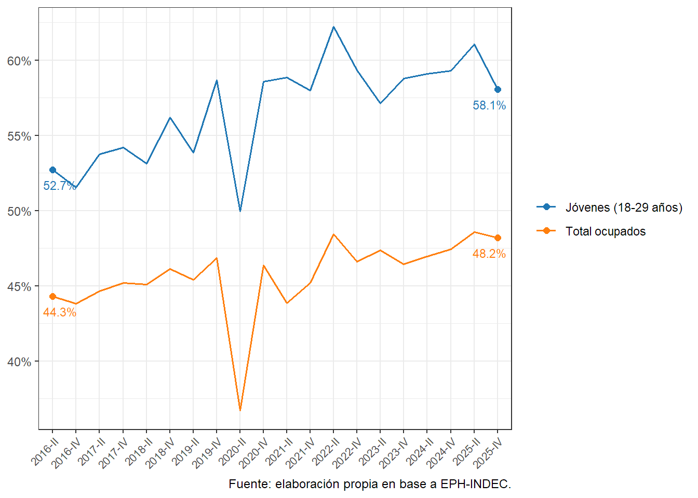
Saldo por región
Si se observa la dinámica del empleo formal por región (Figura 5) se constata que, a excepción del norte del país y de las provincias pampeanas, el resto de los aglomerados que conforman la muestra de la EPH han sufrido una fuerte caída en este tipo de inserciones. En el caso de Cuyo y Patagonia la reducción en el trabajo asalariado formal fue de 6 y 4 puntos porcentuales, respectivamente. Con mayor peso absoluto (-159.000 trabajadores), debido a su densidad poblacional, sigue el Gran Buenos Aires en donde el empleo asalariado formal se redujo de un 49% hacia fines de 2023 al 47% a fines de 2025.
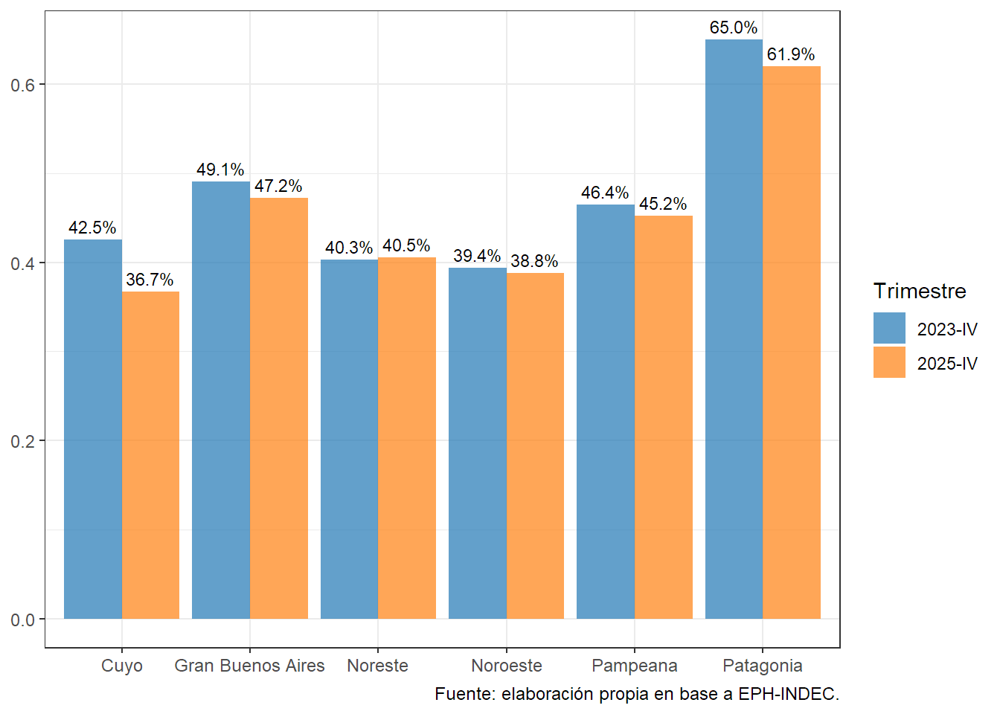
Pluriempleo y ocupación demandante
El aumento del pluriempleo y la demanda de horas de trabajo por parte de la población ocupada son dos fenómenos que se han intensificado en los últimos años, reflejando la dificultad para la percepción de ingresos en el actual mercado de trabajo. El pluriempleo (Figura 6) ha mostrado una tendencia ascendente desde 2021, alcanzando un máximo histórico del 12% en 2025. Por su parte, la cantidad de trabajadores ocupados que demandan más horas de trabajo (Figura 7) ha alcanzado una proporción cercana al 20%, mostrando una nueva tendencia ascedente desde fines de 2023.
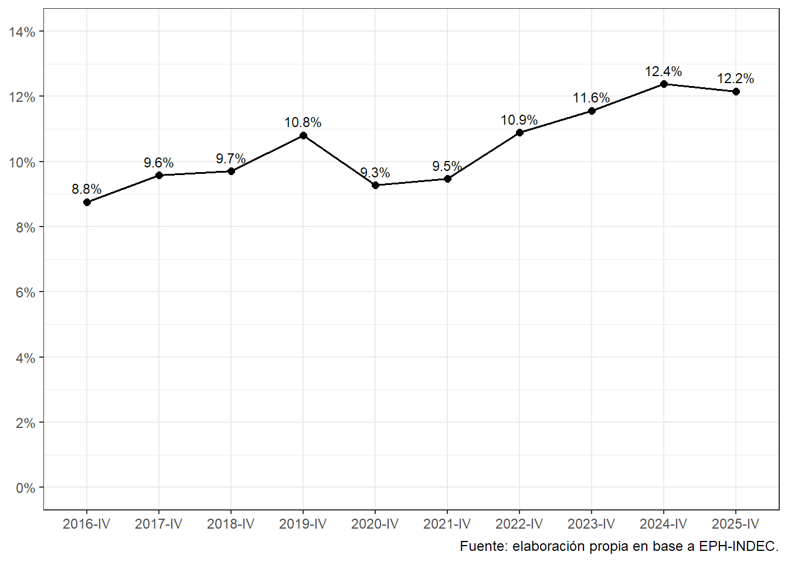
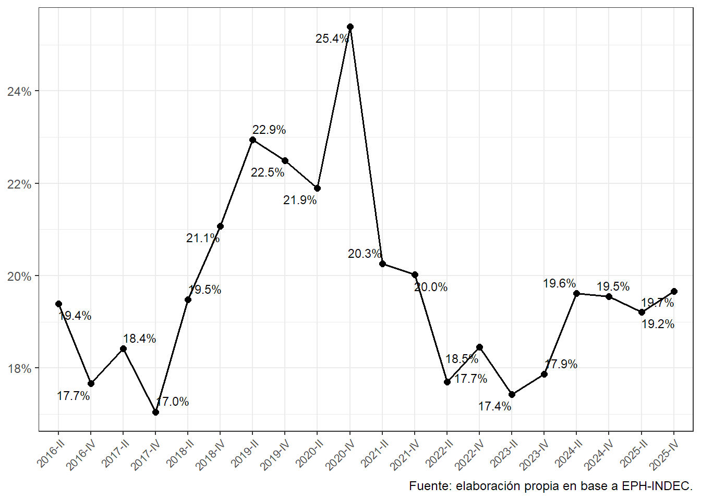
Distribución de trabajadores por rama de actividad
Centrándose en el empleo asalariado, se observa que el saldo entre el cuarto trimestre de 2023 y el cuarto trimestre de 2025 nuevamente permite ilustrar los cambios que están ocurriendo a nivel estructural en el mercado de trabajo (Figura 8). Las ramas que mayores pérdidas han experimentado son la industria manufacturera (-160.380) y la enseñanza (-133.386). Mientras que el primer caso puede entender como una consecuencia a la apertura de importaciones y a la disminución del mercado interno, en el caso de la enseñanza puede existir una combinatoria entre el efecto de la estacionalidad de los meses de comparación con cambios laborales debido a la caída salarial en el sector docente. En menor medida, aunque no por ello menos importante, los trabajos ligados a la administración pública y a la construcción también han mostrado una reducción entre años.
Por el contrario, las ramas que más se han ampliado, en términos absolutos, son las de transporte y almacenamiento (+79.657) y servicio doméstico (+62.452).
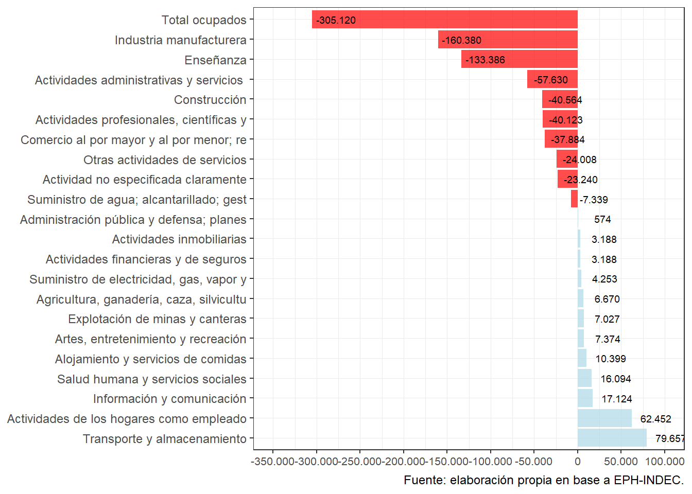
Población con problemas de empleo
La evolución de la población con problemas de empleo en Argentina, presentada en la Figura 9, muestra una tendencia ascendente a lo largo del período 2016-2025. Partiendo de un piso cercano a los 8 millones de personas en los primeros trimestres de la serie, el indicador experimenta un crecimiento sostenido que lo lleva a superar los 9 millones a partir de 2023, alcanzando su punto más elevado en el 4to trimestre de 2025 (superando los 10 millones). Si bien se observan fluctuaciones anuales, la trayectoria general es regresiva. Cada vez más personas enfrentan dificultades estructurales en su inserción laboral, ya sea por desocupación, subocupación, sobreocupación o precariedad en sus puestos de trabajo.
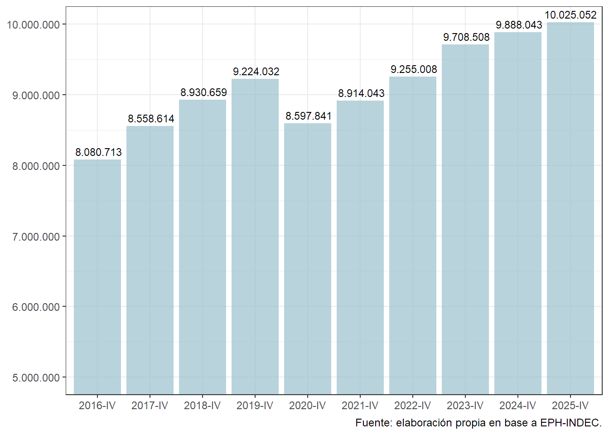
La Figura 10 desagrega la composición de este universo para el cuarto trimestre de 2025 y revela el peso abrumador de la informalidad. Los trabajadores informales constituyen el segmento mayoritario, concentrando a dos tercios de la población con problemas de empleo. Les siguen en importancia los asalariados formales sobreocupados y los desocupados abiertos, cada uno con una porción significativa del total. El resto se distribuye entre formales plenos demandantes de empleo, formales subocupados demandantes y otras categorías de menor peso relativo. En síntesis, el gráfico evidencia que la crisis del mercado laboral no es un fenómeno que afecte exclusivamente a los desocupados, sino que atraviesa a la mayoría de los trabajadores ocupados, con la informalidad como principal factor explicativo y la sobreocupación como una estrategia forzada incluso dentro del empleo formal.
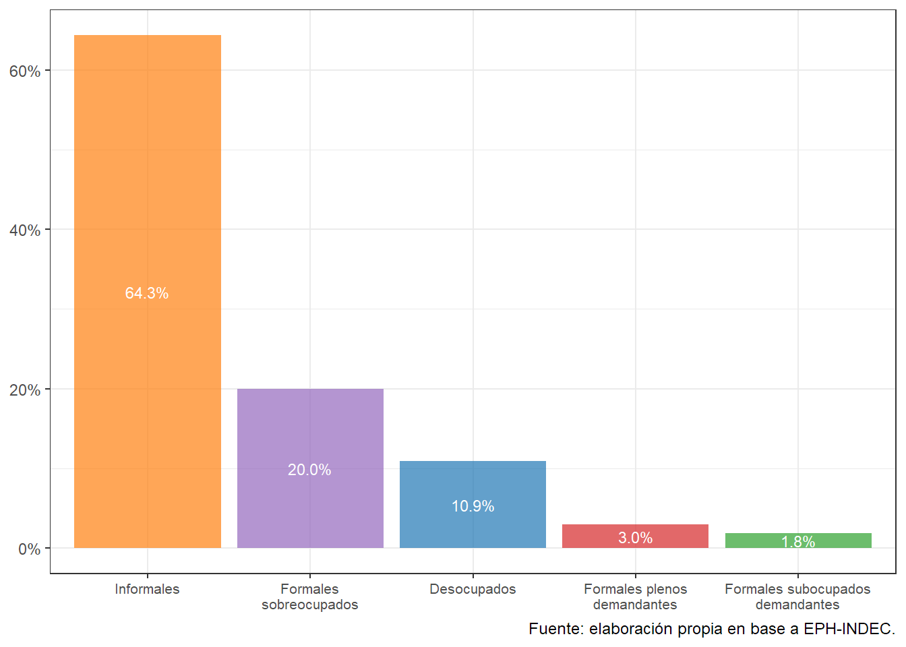
Jubilados que trabajan
Otro rasgo que se profundiza en estos tiempos es el aumento de la población en edad jubilatoria (mayores de 65 años) que se encuentran trabajando (Figura 11). Si bien durante el período de la pandemia del COVID-19 hubo una caída en la población ocupada en este rango etario, la tendencia ha ido en ascenso. Para el cuarto trimestre de 2025 se ha alcanzado el pico máximo en los últimos 9 años, encontrándose un 18% de los mayores de 65 años ocupados en el mercado de trabajo. Esta tendencia da cuenta de la insuficiencia que los haberes y pensiones jubilatorias tienen en el ingreso de los adultos mayores y la necesidad de suplir esos ingresos faltantes extendiendo o reingresando al mercado de trabajo.
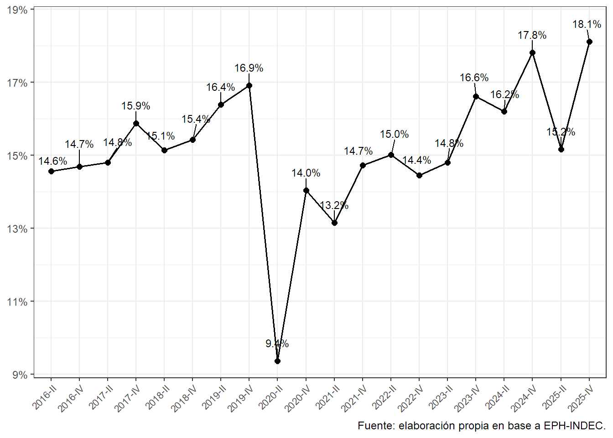
Ingresos y estrategias familiares
Los Millonistas, el 63% de las y los ocupados del país
En este informe nos encontramos nuevamente, a pesar de los meses transcurridos, con la continuidad del fenómeno de los “millonistas”: ocupados que perciben hasta un millón de pesos en forma mensual por los trabajos que realizan.
La Figura 12 revela una clara segmentación del mercado laboral en función de los ingresos mensuales, utilizando el umbral del millón de pesos. En el extremo más desfavorable se ubican los asalariados informales y los cuentapropistas de baja calificación: el 86% y el 81% respectivamente perciben ingresos mensuales de hasta un millón de pesos, lo que implica que la enorme mayoría de estos trabajadores no logra superar dicho umbral. En una situación intermedia se encuentran los asalariados formales y los patrones precarios, con un 46% por debajo del millón, lo que evidencia que incluso dentro del empleo registrado o de la pequeña patronal existen amplios sectores con ingresos insuficientes. En el polo opuesto, los patrones formales son el único grupo donde la mayoría (84%) supera el millón de pesos, seguidos por los cuentapropistas de alta calificación (44% superan el umbral). En términos agregados, el 63% del total de ocupados percibe ingresos mensuales de hasta un millón de pesos, una cifra que expone la crisis salarial generalizada que atraviesa el mercado laboral argentino.
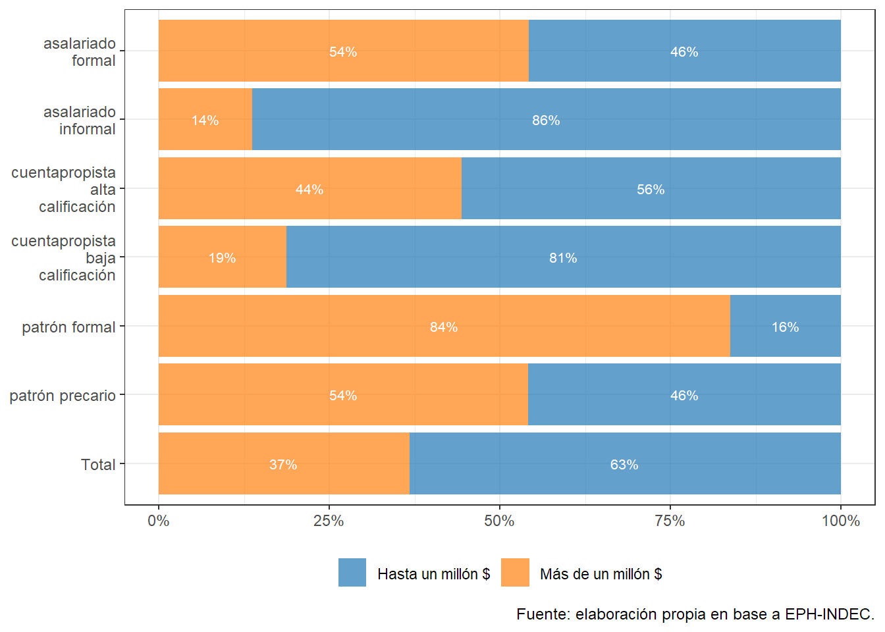
Ingresos laborales por tipo de ocupación y rama
El análisis de las brechas salariales según tipo de inserción laboral (Figura 13) expone las profundas desigualdades en los ingresos laborales al tomar como referencia a los asalariados formales (valor 0).
En el extremo inferior se ubican los asalariados informales, cuyo ingreso es 52% inferior al de un asalariado formal. Prácticamente en la misma situación se encuentran los cuentapropistas de baja calificación, con una brecha negativa del 47%, lo que significa que perciben casi la mitad de lo que gana un trabajador registrado en relación de dependencia.
Estos dos grupos concentran la mayor penalización salarial del mercado laboral, reflejando así el costo económico de operar por fuera de la protección social y de desempeñarse en ocupaciones de baja productividad. En el otro extremo, los patrones formales superan ampliamente el ingreso de los asalariados formales en un 26%, mientras que los patrones precarios lo hacen en un 32% por encima. Por su parte, los cuentapropistas de alta calificación se ubican prácticamente al mismo nivel que los asalariados formales (7% por encima).
En síntesis, el gráfico confirma que la informalidad y el cuentapropismo de baja calificación no solo implican una pérdida de derechos laborales, sino también una penalización económica sustantiva que hunde a estos trabajadores en ingresos de miseria.
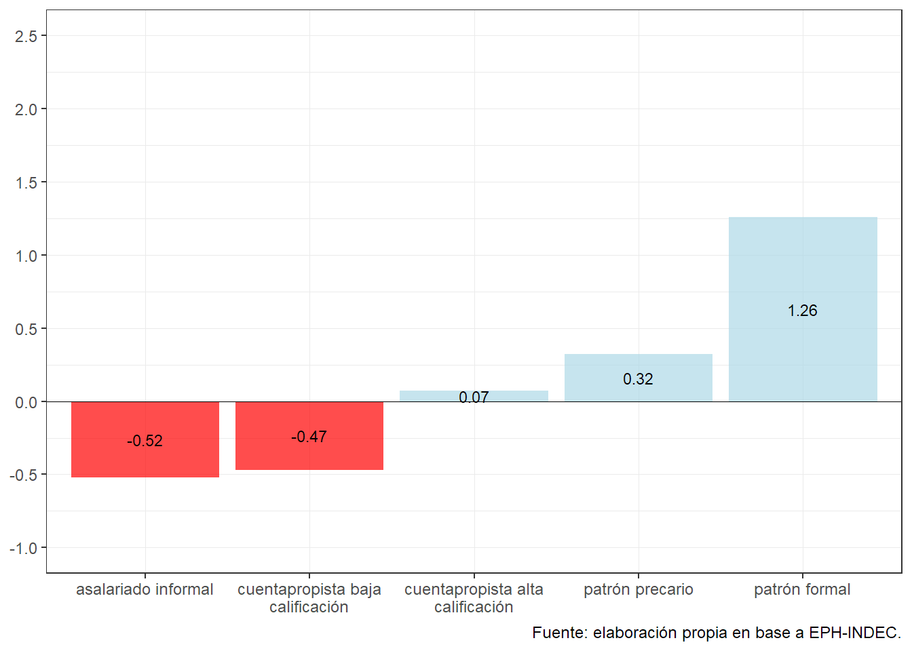
Si consideramos a las 10 ocupaciones más representativas dentro del sector informal, se constata que la variación porcentual del ingreso laboral horario entre el cuarto trimestre de 2024 y el cuarto trimestre de 2025 ha sido positiva en todas ellas (Figura 14). Destacan especialmente las ocupaciones de la construcción, la producción artesanal y el servicio doméstico, donde se observan variaciones superiores al 40%. Dentro de estas ocupaciones seleccionados, las ocupaciones de transporte muestran una pérdida del 10% en los ingresos laborales.
Sin embargo, si realizamos un ranking de las ocupaciones informales según la mediana de ingresos laborales (Figura 15), por fuera de las ocupaciones de dirección de pequeños establecimientos, en promedio, los ingresos laborales mensuales para el 4to trimestre de 2025 eran de $500.000. Las ocupaciones vinculadas al transporte, la construcción y la reparación de bienes son las que mayores ingresos logran captar.
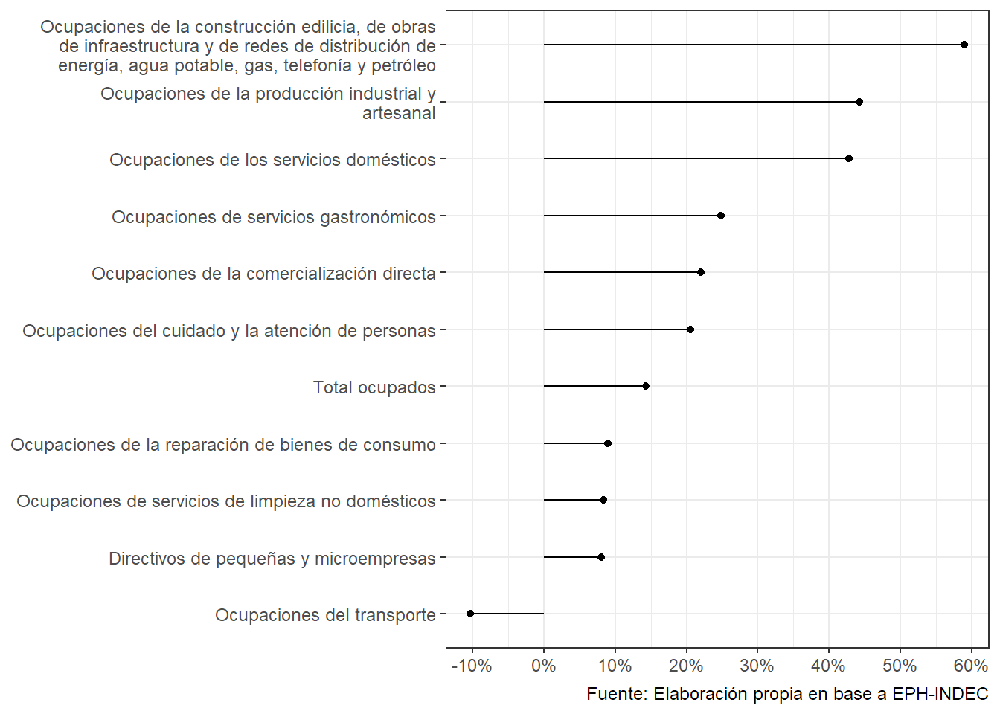
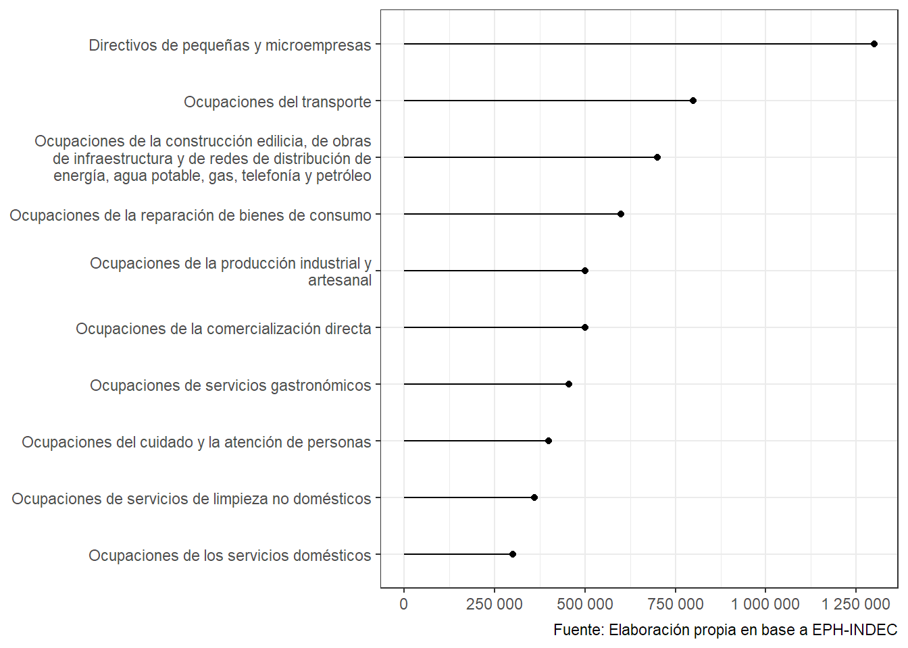
Si observamos al conjunto de los ocupados según la rama de actividad en la que se insertan encontramos que la explotación de minas y canteras1 es el único sector que duplica y más a los ingresos promedio del resto de las actividades2 (Figura 16). Luego, únicamente los sectores de información / comunicación y financieros tienen trabajadores que superan en sus ingresos mensuales $1.500.000.
Para el resto de las actividades, en naranja hemos identificado a las que tienen una mayor participación en la población ocupada total, siendo únicamente la rama de transporte, salud, administración pública e industriales las que tienen ingresos mensuales cercanos al millón de pesos.
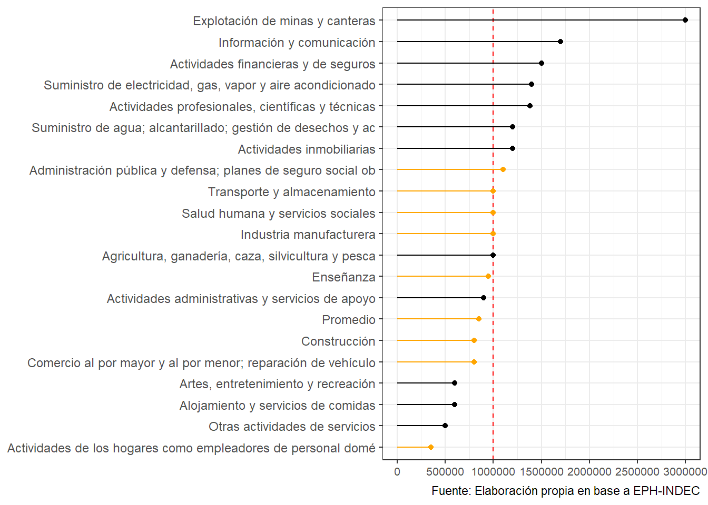
Crecimiento en la brecha de género
La desigualdad en la distribución de los ingresos laborales entre varones y mujeres es un fenómeno persistente en el mercado laboral argentino, que, en promedio, ha estado alrededor del 25% en favor de los varones. La Figura 17 muestra que, a lo largo del período 2016-2025, la brecha de ingresos ha presentado oscilaciones entre 2016 y 2022. Sin embargo, en los dos últimos años, la desigualdad de ingresos laborales entre varones y mujeres ha ido aumentando sostenidamente, alcanzando a finales de 2025 una distancia del 28%.
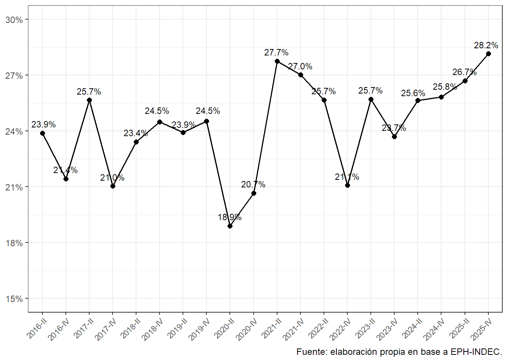
Estrategias económicas familiares
El estudio de las estrategias de los hogares permite una comprensión del modo en que las familias hacen uso de determinadas prácticas y recursos para reproducir o modificar sus condiciones de vida. Como hemos analizado en el informe anterior, el principal recurso al que los hogares recurrieron luego de la devaluación de finales de 2023 fue la utilización de ahorros familiares (Figura 18). Luego, el uso de este activo fue descendiendo a niveles similares a los de años anteriores.
La necesidad de recurrir a préstamos de amigos o familiares también se mantiene constante en los últimos trimestres, cercano al 16% de los hogares. Sin embargo, se aprecia un aumento en la necesidad de recurrir a préstamos bancarios o financieros, alcanzando a fines del 2025 al 15% de los hogares.
Si analizamos estas estrategias según clase social (Figura 19) encontraremos algunos matices en como éstas son implementadas. La utilización de ahorros tiene una cobertura más transversal entre los grupos, siendo los trabajadores manuales los que en mayor medida acudieron a este tipo de práctica durante (cerca del 40%). Algo similar se observa en el caso de la utilización préstamos bancarios o financieros: los trabajadores de grandes establecimientos son aquellos con mayor acceso a este tipo de estrategias (cerca del 20%). Finalmente, acudir a préstamos de familiares o amigos es una práctica que también se observa en los trabajadores de pequeños establecimientos, pero también entre la población inactiva.
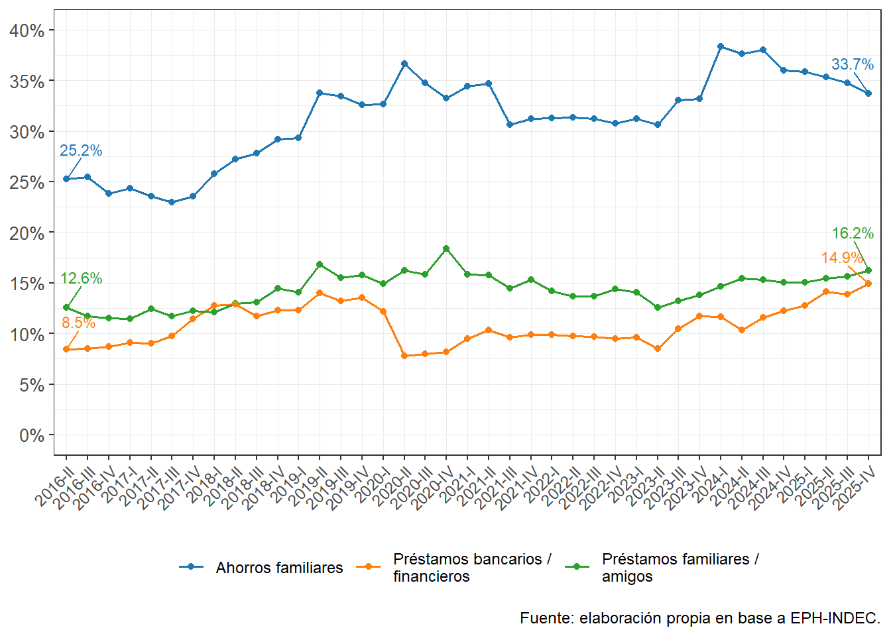
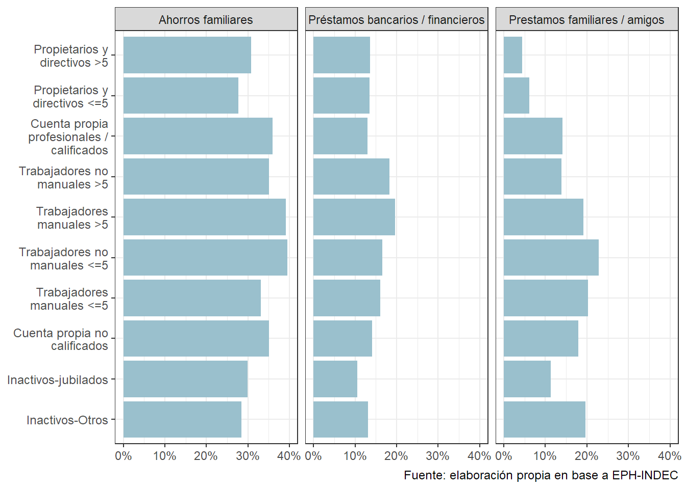
Pobreza
Tendencias generales
En la Figura 20 se observa la evolución de la población bajo la línea de pobreza e indigencia en el período 2016-2025 por trimestres. Como se ha señalado en informes anteriores, luego del incremento inicial de la pobreza entre el último trimestre de 2023 y el primero de 2024 se observó un descenso de la pobreza, cuya dinámica es aun hoy fruto de discusiones en torno a las causantes de dicha disminución. Algunas intervenciones han hecho foco en la disminución de la inflación como fenómeno principal, mientras que otros se han enfocado en los cambios metodológicos que ha tenido el cuestionario de la EPH, que entre otros aspectos, permite una mejora en la captación de los ingresos no laborales.
Más allá de las discusiones, lo que se observa tomando la medición trimestral es un incremento de la pobreza en el último trimestre, en el orden de los 3 puntos porcentuales, lo que señalaría el primer aumento intertrimestral considerable desde principios de 20243.
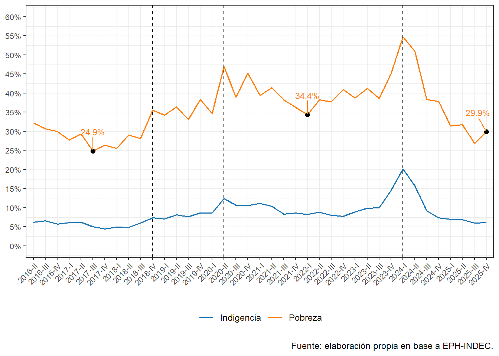
Capacidad de compra
El 71,1% del total de ocupados percibe ingresos laborales mensuales por debajo del valor de la Canasta Básica Total (CBT) para un hogar tipo II (Figura 22). Esto significa que más de siete de cada diez trabajadores argentinos no logran cubrir, con sus ingresos laborales, el costo de una canasta de bienes y servicios básicos para una familia de dos adultos y dos niños.
La cifra adquiere otro carácter al desagregar por tipo de inserción laboral: entre los asalariados informales, el 90% se encuentra por debajo de la CBT, seguidos muy de cerca por los cuentapropistas de baja calificación (85,1%). Incluso dentro del empleo formal, la situación es alarmante: el 59,3% de los asalariados formales y el 57,9% de los cuentapropistas de alta calificación tampoco alcanzan a cubrir la canasta básica. Solo los patrones formales (18,2%) logran superar mayoritariamente ese umbral, confirmando que la capacidad de compra está fuertemente asociada a la posición en la estructura ocupacional.
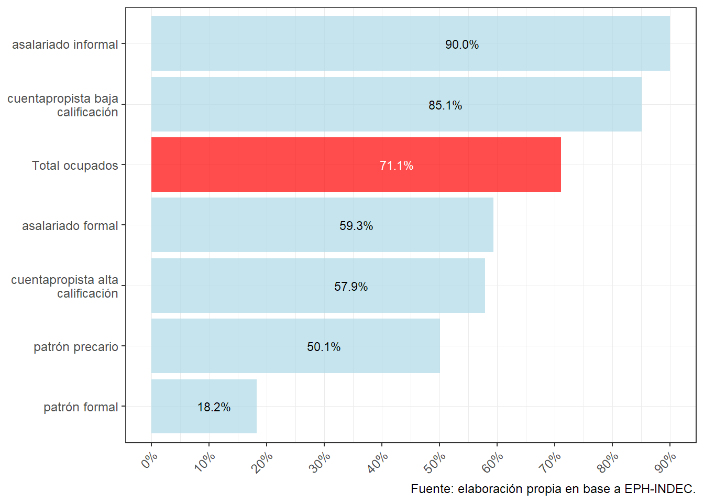
La segmentación por rama de actividad refuerza este diagnóstico y evidencia que la insuficiencia de ingresos no es homogénea, sino que se profundiza en sectores específicos (Figura 23). En el extremo más vulnerable se ubican las actividades vinculadas al servicio doméstico (97,7% por debajo de la CBT), el sector de alojamiento y servicios de comidas (87,2%), ramas caracterizadas por alta informalidad, bajos salarios y escasa protección laboral. También presentan niveles críticos el comercio (79,1%) y la construcción (78,0%), dos sectores de alta incidencia en el empleo total. En el polo opuesto, las únicas ramas donde menos de la mitad de los ocupados están por debajo de la CBT son las actividades financieras (45,5%), información y comunicación (40,9%) y, especialmente, la explotación de minas y canteras (5,4%), aunque esta última tiene un peso muy reducido en el empleo total. En síntesis, los datos confirman que la mayoría de los trabajadores argentinos no logran cubrir sus necesidades básicas con su ingreso laboral, y que esta situación se agrava considerablemente entre quienes se desempeñan en inserciones precarias o en ramas de baja productividad.
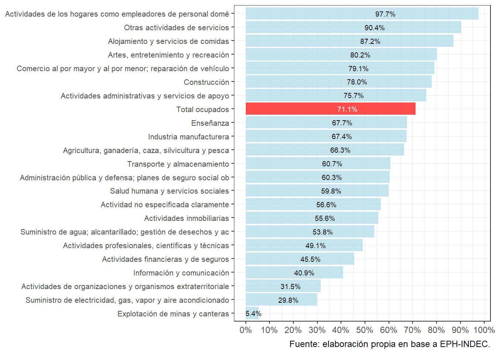
¿Crecimiento a dos velocidades? ¿o crecimiento asimétrico con saldo contractivo?
La dinámica del modelo económico actual suele ser caracterizada como un crecimiento a dos velocidades, donde ciertas ramas dinámicas funcionarían como motores de desarrollo, sobre otras en franco estancamiento o retroceso. Sin embargo, un análisis profundo de los datos del mercado de trabajo revela que se trata de un crecimiento que no genera empleo masivo y que, por lo tanto, resulta insuficiente para un país de 47 millones de habitantes, lo cual puede sintetizarse con la idea del crecimiento asimétrico con destrucción de puestos formales.
Las ramas consideradas “ganadoras” dentro de esta lógica (Agricultura, Explotación de Minas y Canteras, minería e hidrocarburos, y Actividades financieras) emplean apenas al 3% del total de ocupados del país según la EPH. Incluso si se utiliza la fuente SIPA (Sistema Integral Previsional Argentino), que capta mejor el empleo asalariado formal del sector privado, estas ramas no superan el 8% del total.
En marcado contraste, las ramas “perdedoras” (Industria, Construcción y Comercio) concentran cerca del 40% del total de ocupados y se encuentran económicamente frenadas por el proceso recesivo, con una importante destrucción de puestos de trabajo. La paradoja es evidente: los sectores que más crecen son aquellos que generan muy poco empleo, mientras que los sectores que tradicionalmente han sido grandes empleadores están en crisis.
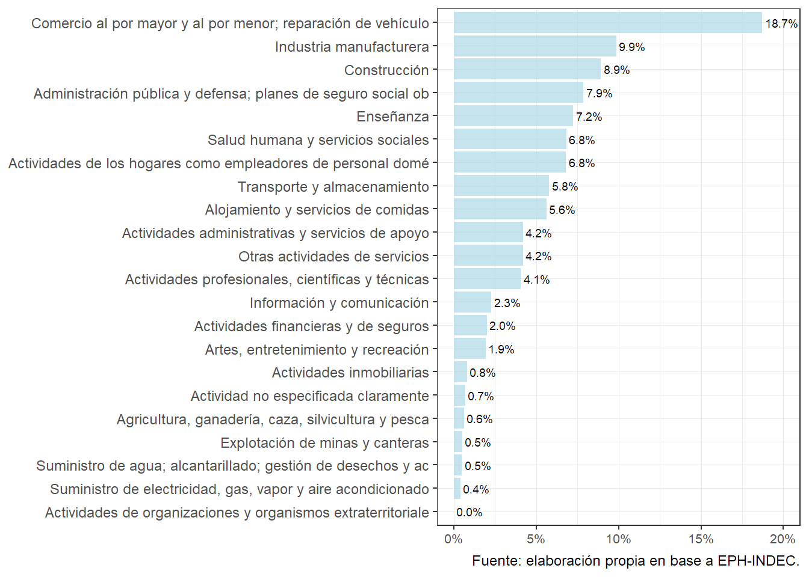
Tomando como fuente SIPA, que suele reflejar mejor la dinámica del empleo formal, muestra que durante este período la rama de explotación de minas y canteras destruyó empleo en lugar de crearlo. Esto relativiza aún más el éxito anunciado del modelo extractivista.
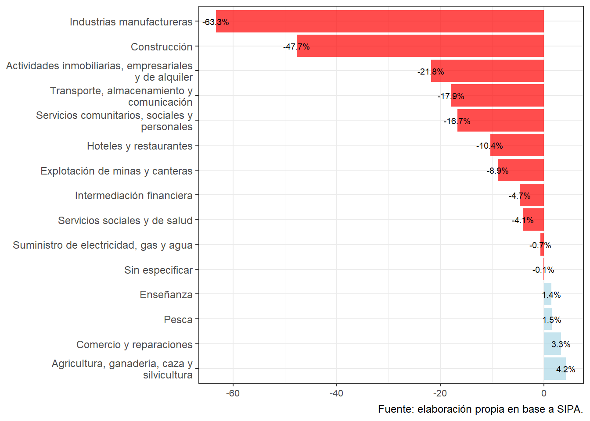
El caso de Neuquén: el derrame que no ocurre
La provincia de Neuquén, donde se ubica el yacimiento Vaca Muerta, ofrece un caso testigo para evaluar si el dinamismo de este sector logra impulsar el conjunto de la economía local. Los datos de la EPH Total Urbano son contundentes: el milagro no existe.
Al comparar el tercer trimestre de 2023 con el tercer trimestre de 2025 (Figura 26), se observa que el asalariado formal en Neuquén casi no creció (apenas un 0,5%). En cambio, sí crecieron los trabajadores por cuenta propia precarios (tanto patrones como cuentapropistas de baja calificación). Es decir, incluso en el epicentro del boom energético, la creación de empleo se concentró mayoritariamente en modalidades precarias, replicando el patrón regresivo observado a nivel nacional.
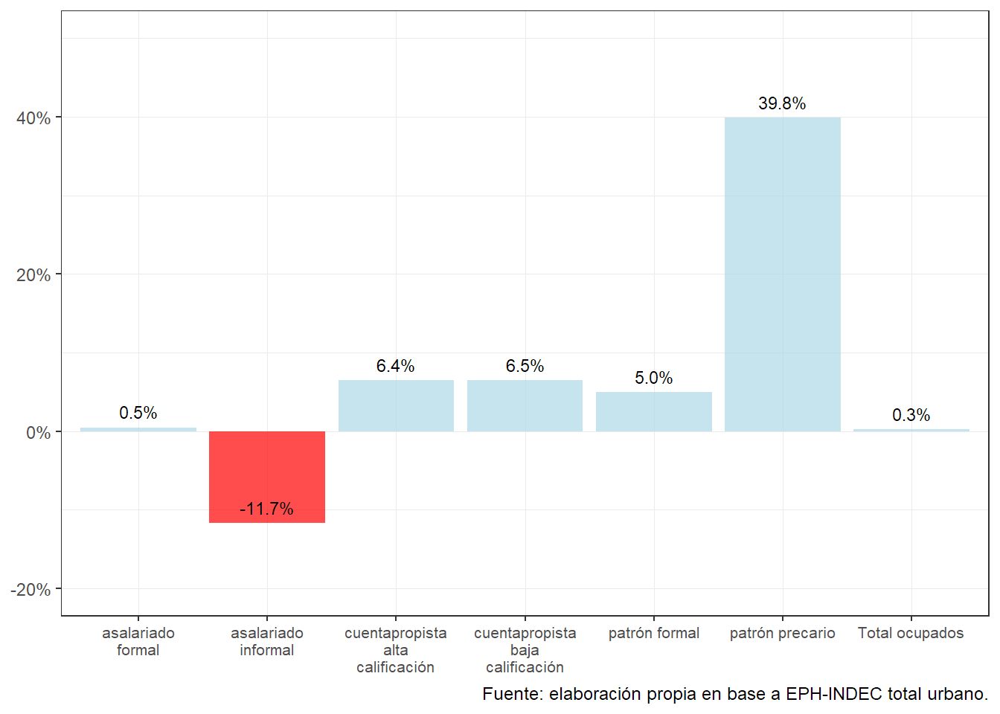
¿Cuántos trabajadores emplea realmente el sector de hidrocarburos en la provincia? Solo el 10% de los ocupados de Neuquén trabaja en la rama de Explotación de Minas y Canteras (Figura 27). En contraste, el 50% de los ocupados de la provincia se explica por cuatro ramas: Comercio, Administración pública, Enseñanza y Construcción. Vaca Muerta, aún en su territorio de mayor influencia, no es el motor del empleo provincial.
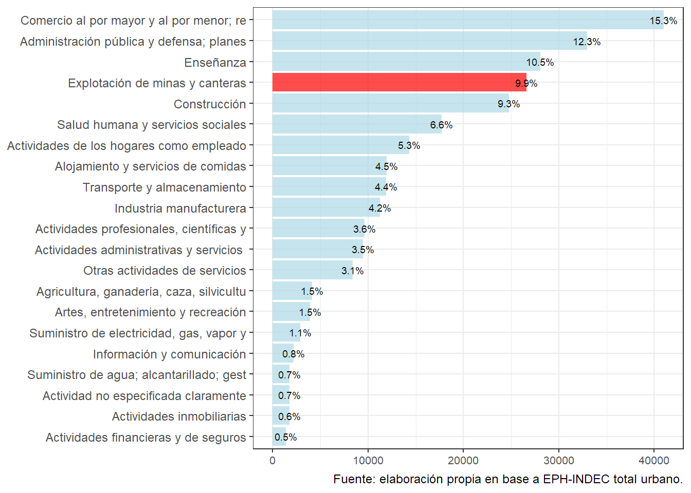
Este modelo no derrama. En los últimos años, Neuquén creció en cantidad de habitantes y en ocupados, pero ese crecimiento no se tradujo en mejoras generalizadas en las condiciones de vida. Por el contrario, el costo de vida (alquileres, alimentos, servicios) se disparó, mientras que los ingresos de la mayoría de los trabajadores no siguieron el mismo ritmo.
Los únicos salarios realmente buenos son los del 10% que trabaja en la rama de minas y canteras, y quizás una o dos ramas más. La brecha salarial es enorme. El 37% de los ocupados de la provincia de Neuquén percibe ingresos laborales de hasta 1 millón de pesos mensuales, una cifra insuficiente para cubrir el costo de una canasta básica en un contexto de inflación y encarecimiento de la vivienda.
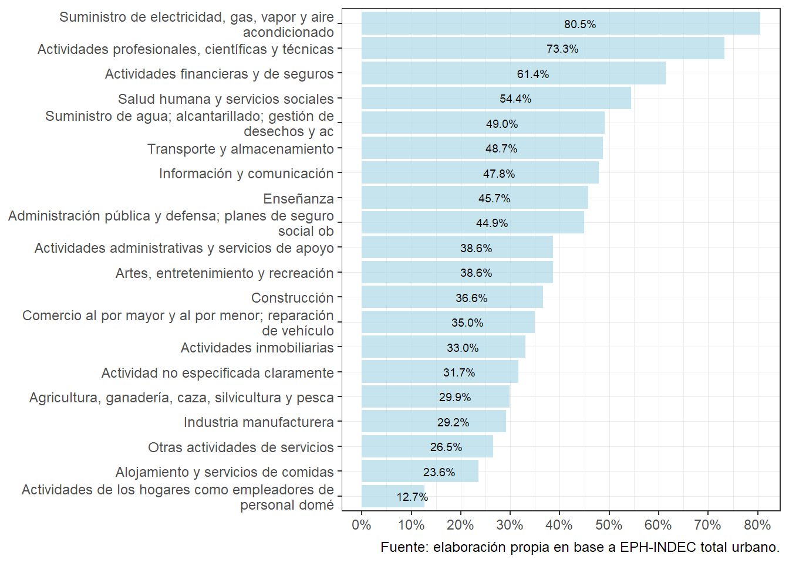
Conclusiones
El análisis del mercado de trabajo argentino en el período 2023-2025 arroja un diagnóstico inequívoco: la recomposición del empleo no es genuina, sino regresiva. La frase condensa una tensión central que vale la pena desplegar con cuidado. Cuando se habla de recomposición del empleo, la palabra recomposición ya carga una promesa implícita: que el mercado laboral, tras un período de contracción o ajuste, se reorganiza hacia un estado de mayor equilibrio, con más personas trabajando en condiciones similares o mejores a las anteriores. Es la narrativa que suele acompañar a los datos de empleo cuando el número agregado de ocupados no cae dramáticamente o incluso sube levemente. El argumento sería: “el mercado se está recomponiendo, el empleo resiste”.
Pero lo que los datos del período 2023-2025 revelan es que esa recomposición existe solo en la superficie. El saldo neto de puestos es casi neutro, sí. El problema es lo que hay debajo de ese saldo: por cada puesto asalariado formal que desaparece —con su red de derechos, aportes jubilatorios, obra social, estabilidad y salario negociado colectivamente—, emerge en su lugar un trabajador por cuenta propia de baja calificación por fuera de todo registro, que gana aproximadamente la mitad, no tiene acceso a salud ni a jubilación futura, y cuya única regla es la supervivencia diaria. El número de ocupados no colapsa, pero la calidad de lo que ese número representa se degrada de forma sistemática.
Esto es lo que hace que la recomposición sea regresiva y no simplemente insuficiente. No se trata de que el mercado laboral crezca lento o por debajo de lo necesario: se trata de que crece hacia abajo. Cada puesto formal destruido no deja un vacío que luego se llena con algo equivalente o peor pagado pero similar en derechos. Lo que se instala en ese lugar es una forma de ocupación estructuralmente inferior, que no acumula derechos, no construye trayectorias, no aporta al sistema previsional y no permite planificar. El trabajador existe, pero en condiciones radicalmente distintas a las que tenía.
La regresividad también opera en otro plano: el de los ingresos. Siete de cada diez ocupados no alcanzan a cubrir el valor de la Canasta Básica Total con su salario. Esto significa que el mercado de trabajo ya no cumple su función elemental de garantizar la reproducción material de quienes participan de él. Trabajar no alcanza para vivir. Esa ruptura —entre el acto de trabajar y la posibilidad de subsistir dignamente con ese trabajo— es quizás la expresión más nítida de lo que significa una recomposición regresiva: el empleo se sostiene como categoría estadística mientras se vacía como sostén de vida.
Una metamorfosis del empleo en clave de precarización. El mercado laboral no se destruyó en términos agregados, pero se transformó radicalmente en su composición. Cayeron 253.543 puestos asalariados formales —los únicos que garantizan estabilidad, derechos plenos y aportes jubilatorios— y se generaron 288.765 cuentapropistas de baja calificación. Quienes pierden un empleo formal y pasan al cuentapropismo ven reducidos sus ingresos aproximadamente a la mitad. La precarización no es un fenómeno marginal: es el destino de la mayoría de los nuevos puestos.
Crisis de ingresos generalizada. El 63% de los ocupados percibe hasta un millón de pesos mensuales y el 71,1% no logra cubrir el valor de la Canasta Básica Total. Esta insuficiencia atraviesa incluso al empleo formal: el 59% de los asalariados registrados tampoco alcanza a cubrir una canasta básica de una familia tipo. Los más afectados son los asalariados informales (90% por debajo de la CBT) y los cuentapropistas de baja calificación (85,1%). Los ingresos totales familiares evitan la caída en la pobreza de la inmensa mayoría, un solo ingreso no puede sostener estar arriba del umbral de la línea de pobreza.
Los jóvenes, la cara más dura del deterioro. El grupo de menores de 30 años concentra el 53% de los desocupados y registra una tasa de informalidad del 58%, siete puntos por encima del registrado en 2016. El mercado de trabajo ha dejado de funcionar como canal de integración social para la generación más joven.
Un crecimiento que no derrama. El modelo económico presenta como sectores dinámicos a ramas —Agricultura, Minería, Finanzas— que emplean apenas al 3% de los ocupados del país. En contraste, Industria, Construcción y Comercio, que concentran al 40% de la fuerza de trabajo, acumulan pérdidas masivas de puestos. El caso de Neuquén es paradigmático: en el epicentro del boom de Vaca Muerta, el empleo formal creció apenas un 0,5%, los puestos generados fueron mayoritariamente precarios y el 37% de los ocupados gana hasta un millón de pesos. El derrame no ocurre.
Más perdedores que ganadores. La heterogeneidad sectorial que exhibe la economía actual no configura un crecimiento equilibrado sino una estructura dual y desigual. Quienes se han mantenido relativamente a salvo son los que conservaron su puesto asalariado formal previo —aunque con deterioro del poder adquisitivo real—. Todos los demás han empeorado. La población con problemas de empleo —que incluye desocupados, subocupados, sobreocupados e informales— supera los 10 millones de personas, la cifra más alta de toda la serie histórica.
En síntesis, el período analizado consolida una tendencia de largo plazo en la que el mercado de trabajo argentino se convierte en un espacio de reproducción de la desigualdad antes que en un canal de movilidad social ascendente. El deterioro no es sectorial ni focalizado: es estructural y generalizado.
Notas
Cabe destacar que la rama minas y canteras, pese a ser una rama dinámica y con altos niveles de productividad genera una demanda de mano de obra muy baja. Del total de ocupados que hay en el país, esta rama emplea solamente al 0,3%↩︎
Aun retirando de los cálculos aquellos casos que pueden considerarse como outliers↩︎
Algunas proyecciones como el nowcast de pobreza realizado por Martín González Rozada también observan hacia fines de 2025 el comienzo de una tendencia de freno al descenso de la pobreza↩︎